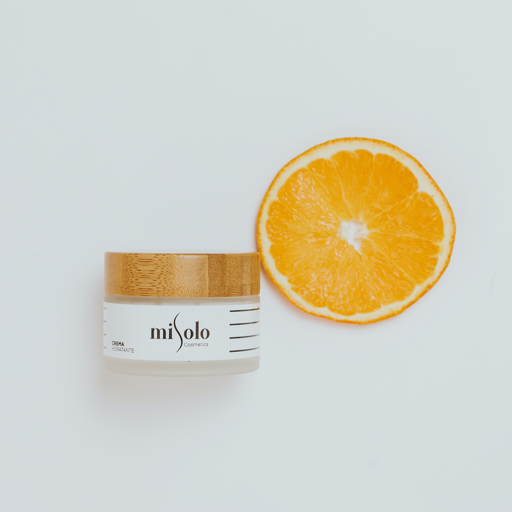

The Science Behind Dry Skin: How it Affects Your Skin Barrier
OCTOBER 13, 2023
What is Dry Skin?
Dry skin, commonly known as xerosis, is a frequent condition. Your skin requires moisture to be soft and supple, but as we get older, it is harder to keep that moisture. In the cold, our skin also loses moisture more quickly. The lack of moisture causes the skin to become dry and itchy, which makes you want to scratch or rub, weakening the skin barrier even more. Insufficient synthesis of filaggrin can also affect the pH of the skin, allowing for aberrant bacterial development that may trigger allergic reactions.
Each of the three major layers of the skin has a distinct primary function.
1. The epidermis, which is compromised, serves as a barrier to stop the loss of fluid and electrolytes and to provide a defense against external insult or harm.
2. The dermis, which provides structural and dietary support
3. Insulation is provided by the hypodermis or subcutaneous fat layer.
The epidermis' primary job is to protect the skin from water loss and keep it moisturized. Increased water loss and dry skin may be the results of barrier changes. Lower skin cell cohesivity can result from disrupted desquamation.
A compromised barrier function will also make it easier for items to penetrate the skin and cause irritating contact dermatitis.
On a macroscopic level, dry skin might seem rough, uneven, flaky, cracked, or even fissured. The skin may exhibit symptoms such as dryness, tightness, discomfort, soreness, or itching. The combination of personal or environmental variables might also result in dryness.
How Dry Skin Develops
Many people suffer from dry skin. It occurs when the skin lacks the necessary amounts of water or naturally produced oils to sustain its own health and stay smooth and supple. Particles from the outside atmosphere can more easily penetrate thin skin. This explains why dry skin may itch.
Dry skin develops when the skin barrier is compromised, leading to increased moisture loss. Various factors contribute to this disturbance, including:
Sebum, one of the skin's natural oils, aids in maintaining moisture. Dryness can result from conditions that cause less sebum production, like psoriasis and atopic dermatitis.
The skin can lose its hydration and natural oils when exposed to harsh environmental factors including wind, sun, and low humidity.
Prolonged exposure to hot water can weaken the skin barrier and deplete the natural oils in the skin.
The pH balance of the skin can be disrupted and protective lipids removed when using harsh soaps and cleansers.
As we age, our skin naturally becomes thinner and produces less oil, making it more susceptible to dryness.
Signs of Skin Damage
Acne.
Skin that is dry, scaly, or flaky.
Infection.
irritation and inflammation.
Itchiness.
rough areas.
stinging, particularly after using skin care products.
sensitivity or tenderness.
Restoring and Maintaining Skin Hydration
Water is essential for maintaining internal body and skin hydration.
Gentle Cleaning to prevent depriving your skin of its natural oils, use gentle, moisturizing cleansers.
Choose hyaluronic acid - ceramides, and glycerin-containing moisturizers to restore and seal in moisture.
Apply daily broad-spectrum sunscreen - to protect your skin from UV rays.
Avoid Harsh ingredients - watch out for Skin Care products that contain alcohol, perfumes, or other irritants that might weaken the barrier of your skin. Use natural and clean skincare in your daily regimen.
Eczema Management with Skin-Smart Strategies
SEPTEMBER 26, 2023
What Is Eczema?
Eczema is a common skin condition with symptoms such as itching, rashes, dry areas, and infection. It is one of several dermatitis-related disorders that can irritate or cause inflammation of the skin. Atopic dermatitis, often known as atopic eczema, is the most common kind.
Most individuals may control their symptoms by seeking therapy and avoiding irritants, which are substances that might harm your skin when they come into touch with it. The most common symptom of eczema is extreme irritation, and rubbing the itch simply worsens it.
Facts about eczema:
- It is not contagious.
- It's often genetic.
- Flares can be triggered by stress.
- It's more common in kids than adults.
- It can appear anywhere on the body.
One of the most common misunderstandings regarding eczema is that it's contagious. Many individuals feel that oozing or very dry skin is something you may "catch." However, eczema is not like a contagious cold or flu. Instead, it is the result of the combination of genetic and environmental triggers.
Types of Eczema Atopic Dermatitis:
develops when a person's skin becomes thinner than usual, leaving them more susceptible to allergens and irritants.
Dyshidrotic Eczema: distinguished by the development of small blisters on the hands and feet. It affects women more than men.
Contact Dermatitis: when a person comes into contact with anything to which they are allergic.
Seborrheic Dermatitis: causes scaly, oily patches of skin with dandruff-like flakes. These patches commonly appear on the body in areas where there are more sebaceous (oil-producing) glands. It includes the hairline, head, upper back, nose, and crotch.

Some tips to help reduce eczema flare-ups:
At least twice a day, moisturize your skin. Choose
products like creams, ointments, shea butter, and lotions to retain moisture in the skin. Select items that prove effective for your needs. The best one for you should be odorless, safe, and effective.
Take a bath or shower every day. Opt for warm water over hot, and limit your bath or shower duration to a maximum of 10 minutes.
Use a soap-free cleaner. Select a cleanser devoid of colors, alcohol, and aroma. For toddlers, you normally simply need warm water to clean them – no soap or bubble bath is required. Soap may be particularly irritating to the skin of young children.
Antibacterial and deodorant soaps can strip too much natural oil from the skin, causing it to become dry and itchy for individuals of all ages. Do not use a washcloth to scrub the skin.

Benefits of Vitamin C in Skincare: A Brighter Future for Your Skin
AUGUST 15, 2023
First, what exactly is vitamin C?
Vitamin C, also known as ascorbic acid, is an essential nutrient that our bodies use for the growth and repair of tissues (including the skin!).
However, there’s no way for our bodies to produce it on our own. This potent antioxidant can naturally be found in fruits and vegetables.
And when applied topically through moisturizers, toners, and serums, Vitamin C can provide a range of benefits, such as:
Brightens the skin
Vitamin C is excellent at brightening your skin and treating hyperpigmentation. Dark spots form due to an overproduction of melanin, which can be triggered by several factors such as sun damage, pregnancy, taking certain medications, or aging.
Vitamin C helps to reduce the appearance of dark spots by restricting the enzyme responsible for the production of melanin. This way, you can achieve a more even complexion and brighter-looking skin.
signs of aging
Collagen is a protein that gives our skin its structure and elasticity. But as we get older, collagen production decreases, causing the skin to lose elasticity and sag.
Fortunately, vitamin C can boost collagen production, resulting in firmer, more youthful-looking skin.
Protects against environmental damage
Perhaps one of the most impressive benefits of vitamin C is its ability to protect our skin against external stressors. Free radicals generated by UV rays, pollution, and other environmental elements can cause a range of skin issues,
including premature aging and hyperpigmentation.
Vitamin C acts as an antioxidant, neutralizing free radicals and preventing them from wreaking havoc on our skin.
Reduces inflammation
There are several reasons why skin gets red or inflamed, from acne and sun damage to dermatitis and allergies. Vitamin C happens to have anti-inflammatory properties that help to calm down skin inflammation and reduce redness.
So, if you're dealing with irritated or inflamed skin, vitamin C may help alleviate these symptoms and restore your skin's natural radiance.